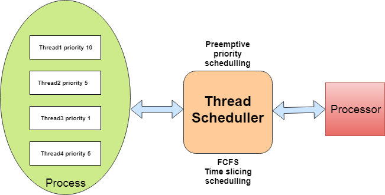
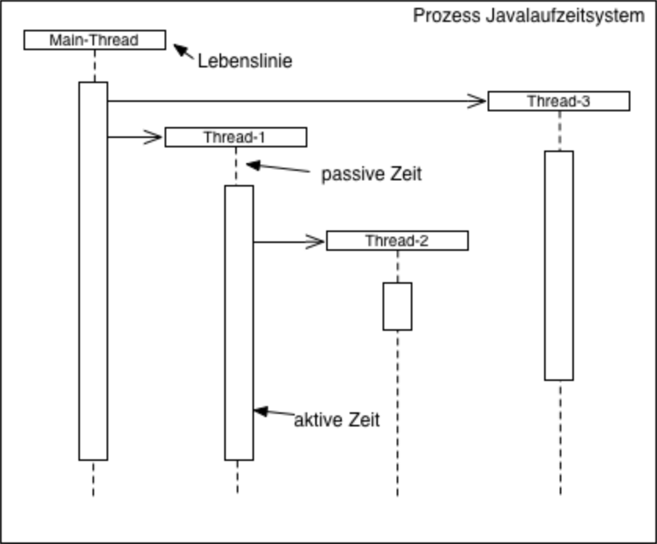
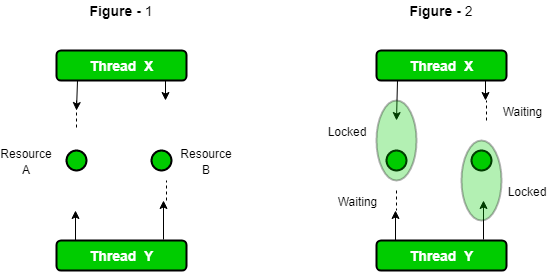
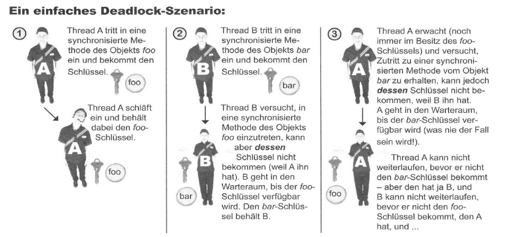

Vorlesung 4
Thread Scheduler
Ein Thread Scheduler ist dafür verantwortlich, welcher Thread vom Zustand lauffähig in den Zustand laufend versetzt wird. Leider lässt sich der Scheduler nicht kontrollieren, daher sollte man sich nicht auf ihn verlassen.
Das Verhalten des Scheduler ist nicht vorhersehbar oder kalkulierbar. Daher sollte ein Programm nicht auf ein bestimmtes Verhalten abzielen. Um dieses Problem ansatzweise zu umgehen, können Threads für einen Zeitraum in den Zustand blockiert versetzt werden.

Dieser Zustand wird auch als Schlafen bezeichnet. Der Thread kann erst wieder laufen, wenn die blockierte Zeit abgelaufen ist. Da man jedoch immernoch nicht den genauen Algorithmus kennt, ist der Scheduler auch mit dieser Methode nicht zu 100% kontrollierbar.
Im Rahmen der Vorlesung haben wir dazu eine Übung gemacht, in der wir zwei Threads kreiert haben und uns deren Verhalten angeschaut haben. Der dazugehörige Code sieht folgendermaßen aus:
Nebenläufigkeitsprobleme

- Bei Threads können Nebenläufigkeitsprobleme auftreten, die zu Konkurrenzsituationen führen. Sie treten auf, wenn zwei oder mehr Threads mit denselben Heap-Objekten arbeiten und können im schlimmsten Fall zu Datenbeschädigungen führen.
- Da Threads unabhängig voneinander arbeiten, weiß ein Thread nicht, was der andere gerade tut, und führt die Aktionen seines Threads ohne zu zögern aus, sobald er den laufenden Zustand erreicht.
- Auch ein Thread selbst weiß nicht, ob er zwischen verschiedenen Anweisungen für kurze Zeit nicht blockiert war und ob sich in der Zwischenzeit Daten geändert haben.
Verlorene Aktualisierung
Anschließend haben wir uns mit dem „Problem des verlorenen Updates“ beschäftigt. Dies stellt eine Sonderform der bereits diskutierten Kontingenzprobleme dar. Das Problem tritt auf, wenn Änderungen an Objekten nicht atomar sind, sondern stufenweise erfolgen. Bei nur einer Anweisung in einer Methode tritt dieser Fall nicht auf.
Das Beispiel aus der Vorlesung war eine Variable, die inkrementiert werden sollte, indem sie zuerst in einer lokalen Variable zwischengespeichert und diese Variable dann der ursprünglichen Variable als Wert +1 zugewiesen wurde.
Im Code sieht das so aus:
public void increment(){
int i = konstanter Status;
Kontostand = i +1;
}
öffentliches synchrones Void-Inkrement () {
int i = konstantand;
konstant = i +1;
}
Ein weiteres Problem beim Multithreading sind sogenannte Deadlocks.

Dies ist eine gegenseitige Blockierung von synchronisierten Methoden. Dies kann passieren, wenn zwei Threads den Schlüssel haben, den der andere haben möchte. Die Threads warten dann darauf, dass der gewünschte Schlüssel freigegeben wird, ohne ihren eigenen freizugeben. Hier nocheinmal ein veranschaulichtes Szenario:

Beachten Sie, dass die Sperre keine Sperre für die Methode ist, sondern für das Objekt, auf das die Methode verweist. Wenn das Objekt über mehrere synchronisierte Methoden verfügt, können zwei Threads nicht gleichzeitig in eine der Methoden eintreten. Das Schlüsselwort im Code sperrt also nicht die Daten selbst, sondern synchronisiert nur die Methoden, die auf die Daten zugreifen.
Leider hat Java im Gegensatz zu Datenbanken keine Handhabung für Deadlocks wie Transaktions-Rollbacks, sondern die Methoden warten einfach ewig. Java bemerkt nicht einmal, dass ein Deadlock aufgetreten ist.
Erzeuger/Verbraucher-Problem:
Das letzte Problem mit Threads, das wir uns im Laufe der Vorlesung angesehen haben, war das Producer/Consumer-Problem. Dies tritt auf, wenn zwei oder mehr Threads Daten über einen Pufferspeicher austauschen.
Es kann vorkommen, dass ein Verbraucher bereits versucht, auf neue Daten zuzugreifen, obwohl diese noch nicht vorhanden sind oder nur ältere Werte haben. Auch dies führt zu verfälschten oder unvollständigen Daten. Im Rahmen des Vortrags haben wir uns mit einer möglichen Lösung mittels „Thread-Kommunikation“ beschäftigt. Dadurch können die Threads "vorziehen" (mit der Methode join() oder join(ling mullis)), um aufeinander zu warten (mit der Methode wait() oder wait(long timeout)) oder um andere Threads zu benachrichtigen, wenn sie ihre Ausführung beendet haben (mit der Methode translate() oder NotifyAll()).